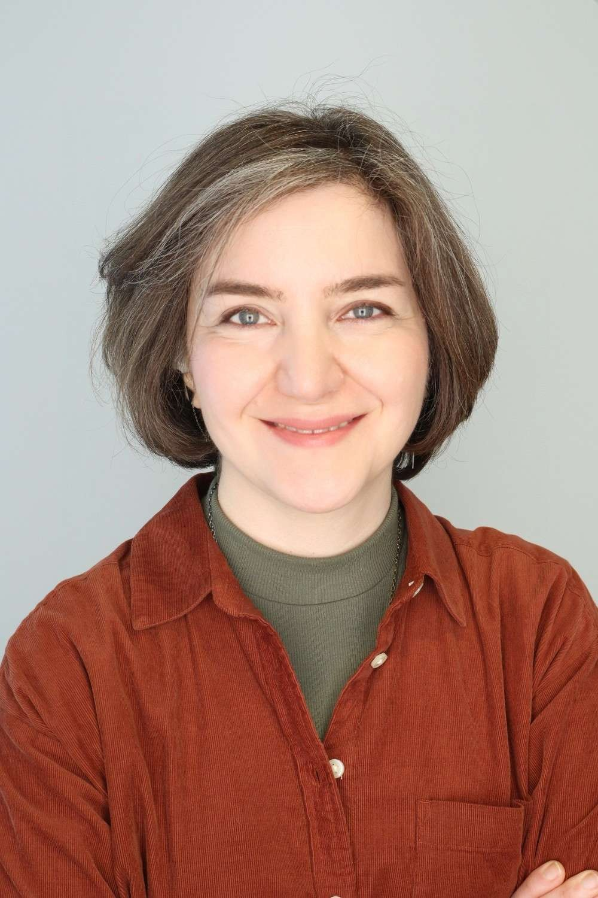

Golnar Gharooni-Fard
I am a postdoctoral fellow in the Soft Math Lab at Harvard University and an AAUW Postdoctoral Fellow (2026–2027). I am curious about the mechanisms underlying collective behavior and how living organisms interact and communicate.
I received my PhD in Computer Science from the University of Colorado Boulder in 2024.
News
- May 2026Named an American Association of University Women (AAUW) Postdoctoral Fellow for 2026–2027.
- Apr 2026Spoke at the Mathematics and Biology Symposium at Harvard's Center of Mathematical Sciences and Applications.
- Oct 2025Presented the Measuring Mather project at Harvard's Sustainability Social (Harvard College news).
- Aug 2025New paper in PLoS Biology: Honeybees adapt to a range of comb cell sizes by merging, tilting and layering their construction.
- Mar 2025Started a postdoc at the Soft Math Lab, Harvard University.
- Jan 2025Contributed talk at DynamicsDays25, Denver, CO.
- Nov 2024Successfully defended my PhD thesis.
- Aug 2024Presented at the IUSSI-NAS breakout meeting, Prescott, AZ.
- Jun 2024Presented at the ACM Collective Intelligence conference, Boston, MA.
- May 2024Nominated by CU Boulder for the Schmidt Science Postdoctoral Fellowship.
- Apr 2024Our paper was featured in the first edition of npj Complexity.
- Mar 2024Won the CU CS annual outstanding research paper award.
- Feb 2024Presented a poster at the CU CS annual research expo.
- Jan 2024Gave a talk to the Colorado Beekeepers community.
- Dec 2023I am now officially a PhD candidate!
- Nov 2023Gave a talk in the CU CS student colloquium series.
- Sep 2023Won the CU CS departmental publication recognition award for our PNAS paper.
- Aug 2023Paper accepted at the CI'23 conference.
- Jul 2023Mentored three high school students through the CU Science Discovery program.
- Jun 2023Attended the SFI Complex Systems Summer School and presented a poster at the Collective Intelligence symposium, Santa Fe, NM.
- May 2023Presented at SIAM-DS23, Portland, OR.
- Apr 2023Invited talk to the Boulder County Beekeepers Association.
- Mar 2023Presented at the APS March Meeting, Las Vegas, NV.
- Nov 2022New paper in PNAS: Crystallography of honeycomb formation under geometric frustration.